BEYOND THE BUILD
Beyond the code.
Outside work I enjoy thrillers and mysteries on screen, open-world and racing games, and books that range from Tamil historical fiction to philosophy.
THROUGH MY LENS
Places, light, and passing moments.
Travel, wildlife, and the small scenes that make a place stay with you.
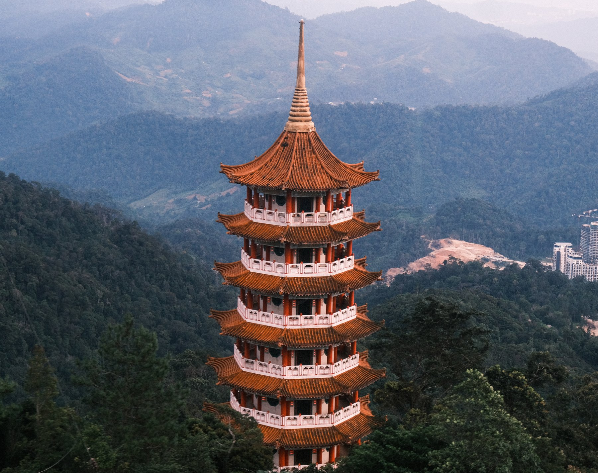
Genting Highlands
Malaysia
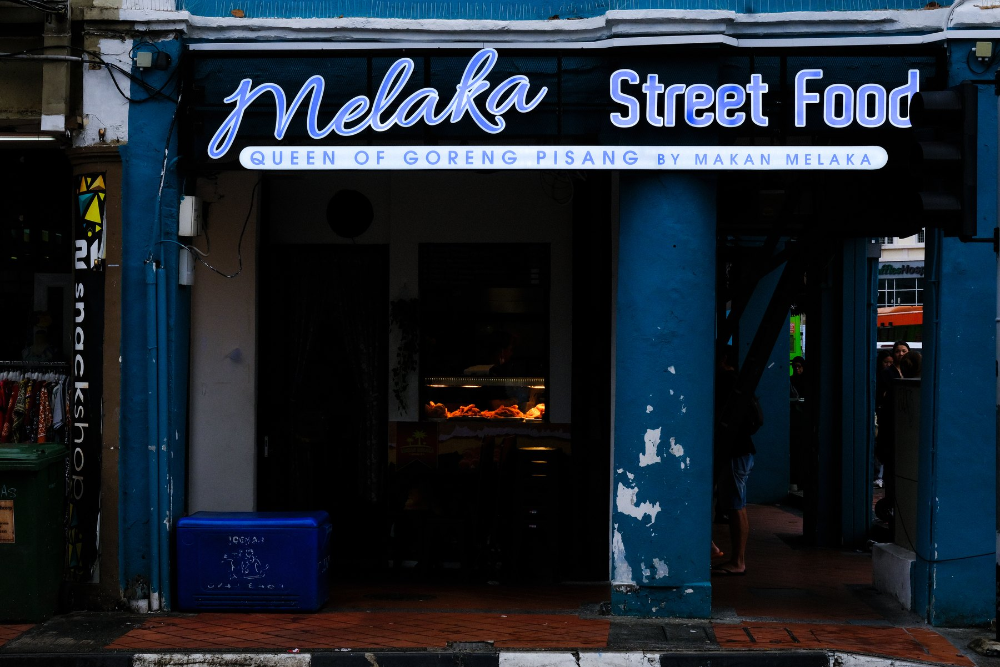
A street in Singapore
Singapore
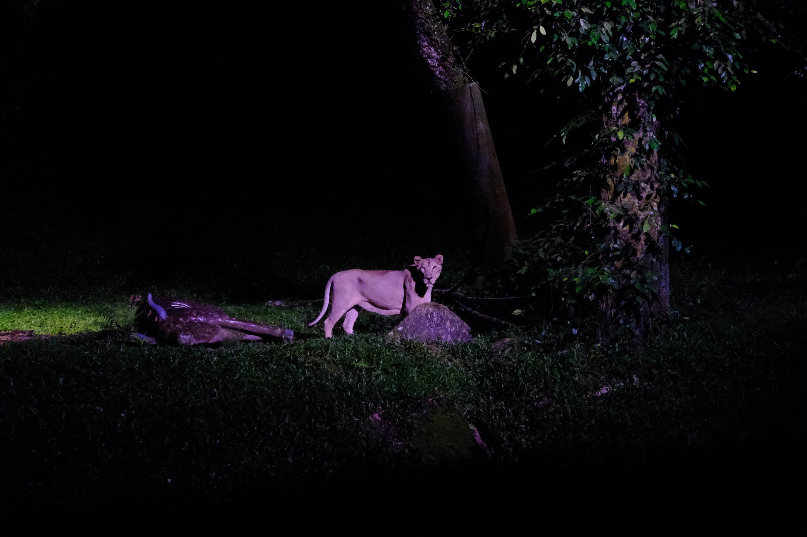
Night Safari
Singapore
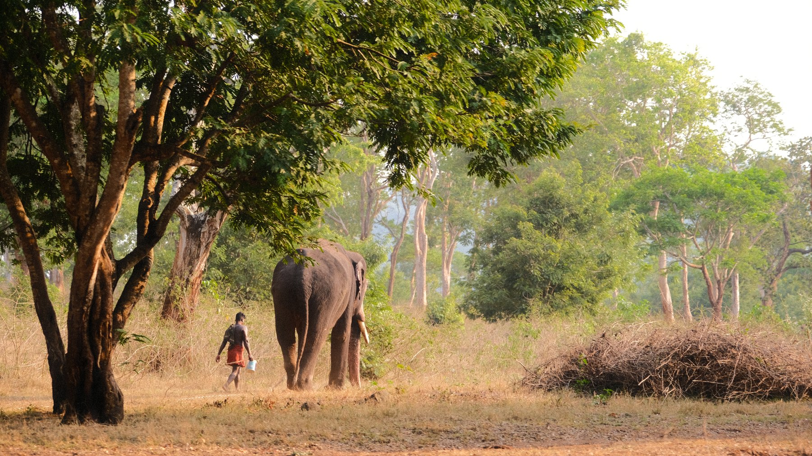
Elephant shelter
Mudumalai
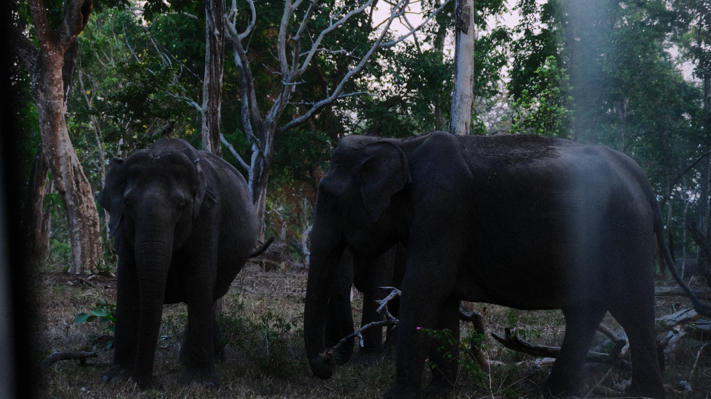
Forest safari
Mudumalai
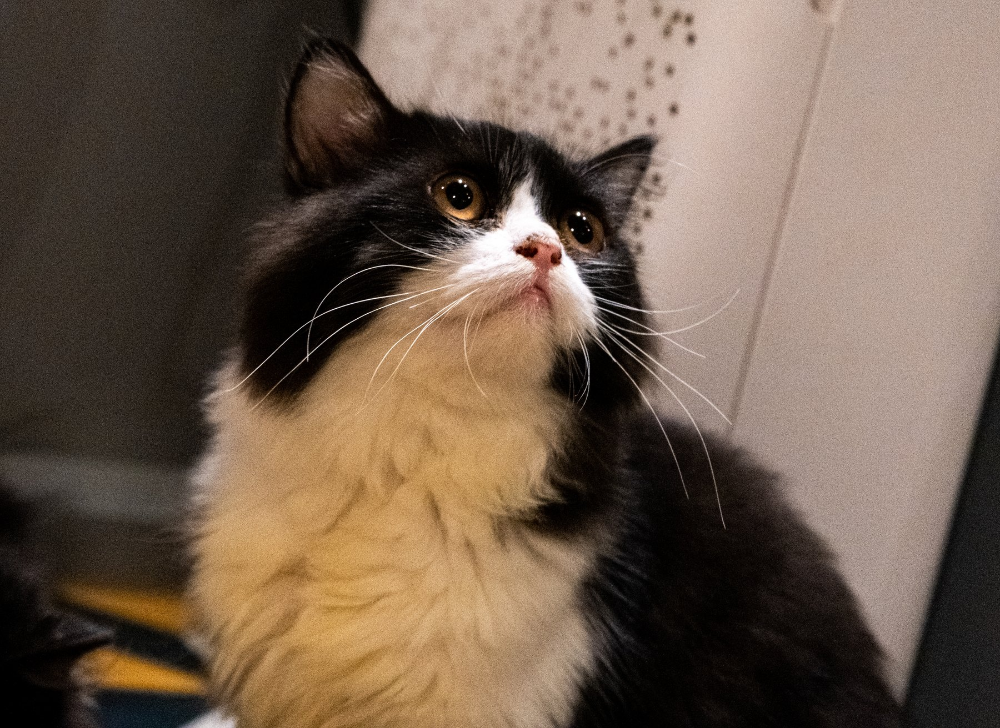
Café cat
Pondicherry
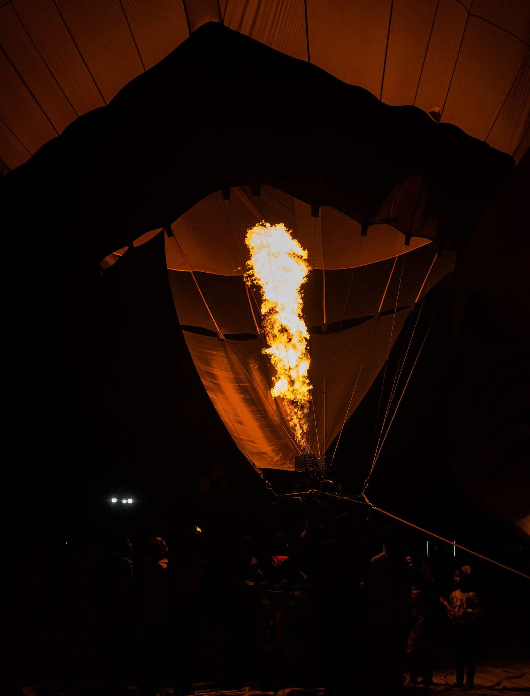
Balloon festival
Pollachi
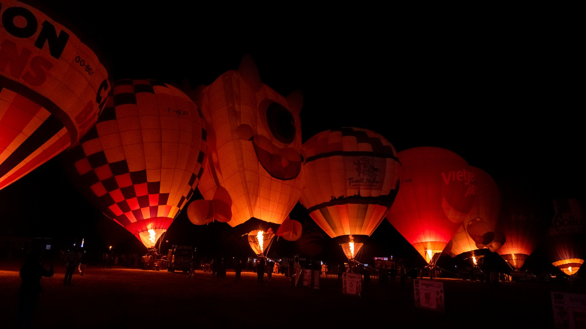
Balloon festival at night
Pollachi
Movies
Favourite genres: ThrillerMystery
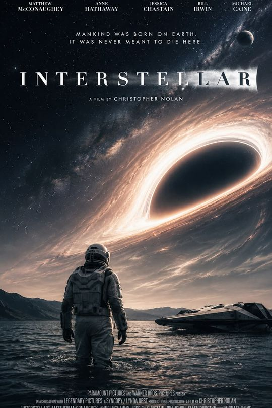
Interstellar
2014 · Christopher Nolan
Image via Pinterest ↗
Incendies
2010 · Denis Villeneuve
Image via Pinterest ↗
Kadaisi Vivasayi
2022 · M. Manikandan
Image via Pinterest ↗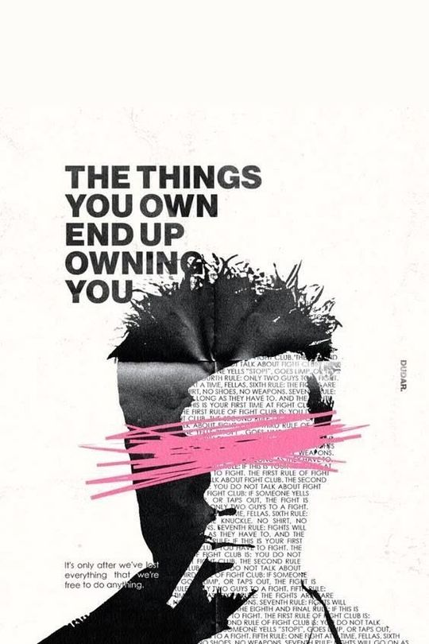
##### ####
Image via Pinterest ↗Games

Cyberpunk 2077
2020 · CD Projekt Red
Image via Pinterest ↗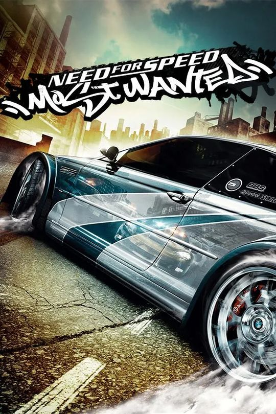
Need for Speed: Most Wanted
2005 · EA Black Box
Image via IMDb ↗
Grand Theft Auto V
2013 · Rockstar Games
Image via Pinterest ↗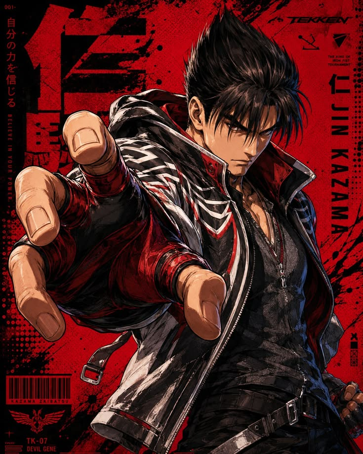
Tekken
Jin Kazama
Image via Pinterest ↗Books
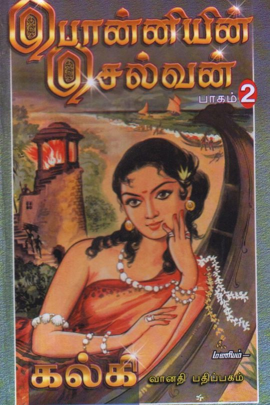
Ponniyin Selvan
Kalki Krishnamurthy
Image via Pinterest ↗The Fountainhead
Ayn Rand
Image via Pinterest ↗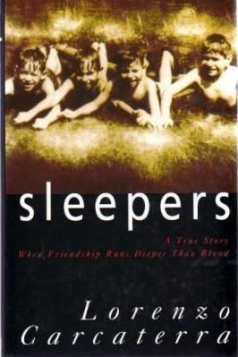
Sleepers
Lorenzo Carcaterra
Image via Pinterest ↗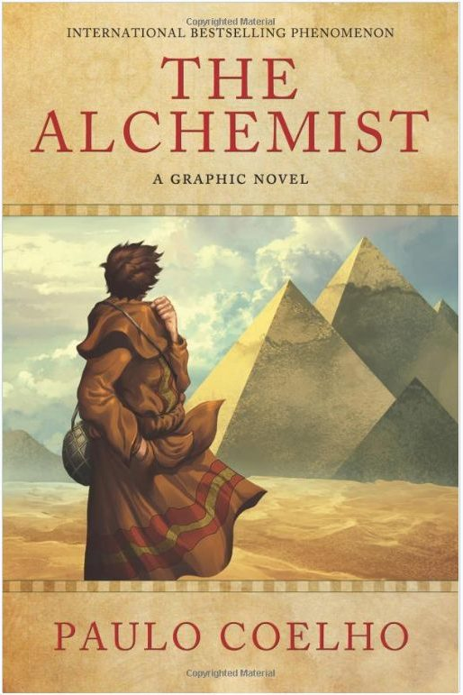
The Alchemist
Paulo Coelho
Image via Pinterest ↗